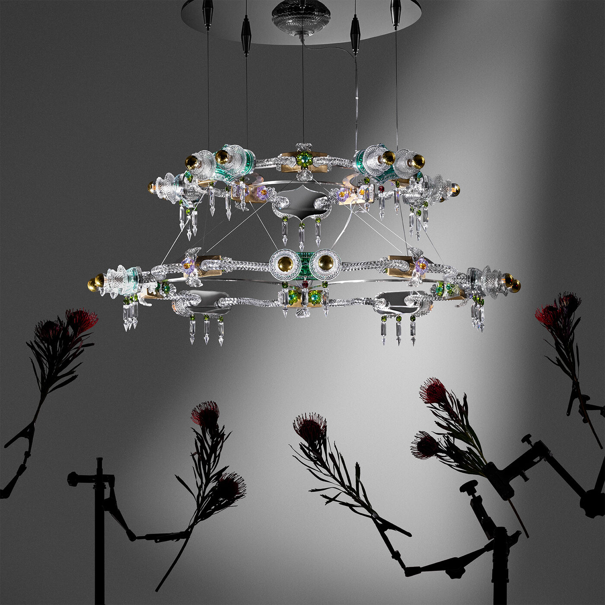

For one week each April, Milan stops being a city and starts being a proposition. Every palazzo becomes a gallery, every courtyard a stage set, every disused swimming pool a philosophical statement. The sixty-fourth edition of Salone del Mobile and its sprawling satellite programme Fuorisalone have transformed the city once again — and this year, the ambition feels unrestrained.
The numbers are familiar: Salone del Mobile runs 21–26 April at Fiera Milano Rho, while Fuorisalone scatters hundreds of installations, exhibitions and brand takeovers across the city’s design districts from Brera to Tortona, Porta Venezia to the Navigli. What distinguishes this edition is the depth of creative partnerships and a new willingness from luxury houses to treat design week as something more than a brand exercise.
At the fair: Salone Raritas and the OMA contract
The headline innovation at Rho is Salone Raritas, a new platform opening the fair to collectible design and limited-edition production for the first time. Curated by Annalisa Rosso and housed within a space designed by Formafantasma, it functions as a kind of architectural lantern — modular, respectful, allowing each presenting gallery to maintain its own identity while contributing to a coherent whole. The arrival of collectible design within the fair’s official programme is a statement of intent: Salone is acknowledging that the boundary between industrial furniture and gallery-grade work has dissolved.
Equally significant is the new contract-furniture initiative led by Rem Koolhaas and David Gianotten of OMA, signalling the fair’s ambition to speak to the hospitality and commercial-interiors market with the same authority it brings to residential design. For a publication that covers hotels as closely as fashion, this felt like a direct invitation.
Fuorisalone: the installations that stopped the city
Lina Ghotmeh’s “Metamorphosis in Motion” at Palazzo Litta is the installation people will remember from this edition. A bold-hued labyrinthine structure built around her philosophy of the “archaeology of the future,” it transforms the palazzo’s courtyard into something between a ruin and a premonition — colour-saturated, spatially disorienting, utterly photogenic and yet resistant to being reduced to a photograph. You have to walk through it to understand why the walls curve where they do.
Bethan Laura Wood’s “Crystal Crypt” for Baccarat marks the French crystal house’s return to Milan Design Week after a decade-long absence, and it was worth the wait. Housed at Via Marco Formentini, Wood has reimagined the iconic Zénith chandelier as a science-fiction proposition — part grotto, part spacecraft interior, lit from within by the kind of prismatic refraction that only hand-cut crystal can produce. Baccarat curator Emmanuelle Luciani has given Wood the freedom to treat crystal as a sculptural medium rather than a decorative one, and the result is one of the most visually arresting presentations in the city.
Every palazzo becomes a gallery, every courtyard a stage set, every disused swimming pool a philosophical statement.
The Splendid EditAt Chiostri di San Simpliciano, Demna has staged “Gucci Memoria” — a reimagining of Gucci’s 105-year history through Renaissance-inspired tapestries that reframe the house’s archive as something monumental rather than nostalgic. It is Demna’s first significant design-world statement since taking the Gucci role, and it signals that his approach to the house will be anchored in material culture rather than spectacle.
Konstantin Grcic’s Nocturne collection for Flos turns the brand’s showroom into a landscape drawn from 2001: A Space Odyssey — lamps displayed among furniture printed on glass, an illuminated floor beneath, the space existing somewhere between presence and illusion. Grcic has always understood that lighting design is spatial design, and this installation makes the argument more persuasively than any catalogue ever could.

Bethan Laura Wood’s “Crystal Crypt” for Baccarat. Photography courtesy of Wallpaper* / Baccarat
The houses: Hermès, Jil Sander, Molteni
Hermès has returned to La Pelota in the Brera design district with another of its larger-than-life home-collection installations — a space that regularly enchants and this year is no exception, merging culture and history with the house’s artisanal approach to domestic objects. Noë Duchaufour-Lawrance’s lamps for Dior, inspired by haute-couture silhouettes and constructed from hand-blown Murano glass and Madame bamboo, represent one of the most refined craft-meets-fashion crossovers in the city.
Jil Sander creative director Simone Bellotti drafted Studioutte to create a “Reference Library” in the brand’s Milanese headquarters — a hushed, low-lit space where sixty books sit on illuminated plinths, each selected by a notable figure from Lykke Li to Sofia Coppola. Visitors are handed white gloves on entry. It is the kind of installation that feels like a statement about what fashion houses could be if they chose depth over breadth.
Molteni’s “Responsive Nature” at Garden Senato creates a hidden garden in the heart of the city: six distinct gardens framing the company’s outdoor collections, each interacting with foliage, water and architecture. The marriage of furniture and landscape architecture feels genuinely considered rather than merely scenic — a distinction that matters in a week where every brand wants a garden.
The emerging: Alcova, Dropcity, 6:AM
Alcova — the nomadic design platform that has become Milan Design Week’s most important incubator — has taken over Franco Albini’s Rationalist Villa Pestarini and the Baggio Military Hospital. The project’s genius lies in staging exhibitions with minimal intervention, letting raw architectural spaces serve as the backdrop for discovery. This year the programme honours the legacy of architect Luisa Castiglioni, with works by European architecture schools threading through the abandoned wards.
The collective 6:AM has transformed Piscina Romano, a 1929 public swimming pool, with “Over and Over and Over and Over” — an installation that uses repetition as its guiding principle, filling the pool with blown-glass cubes while Invernomuto’s sound installation converts amphibian ecosystem data into sonic composition. It is the kind of project that could only happen during design week, in a city where a municipal swimming pool is treated as a cultural venue without anyone finding it strange.
Dropcity, Andrea Caputo’s design and architecture research centre in the arches beneath Stazione Centrale, continues to grow as a permanent counterpoint to the fair’s temporary installations — its programmes in ceramics, textiles, woodworking and 3D production offering the kind of year-round substance that design week’s ephemeral moments cannot.
What makes Milan Design Week endure is not the scale of it — though the scale is extraordinary — but the seriousness with which the city commits to the proposition that design is a form of public culture, not merely a trade fair. The sixty-fourth Salone and its Fuorisalone have made that case once again, in blown glass and crystal, in tapestry and light, in abandoned hospitals and Renaissance cloisters. The city became the exhibition. The exhibition became the city.